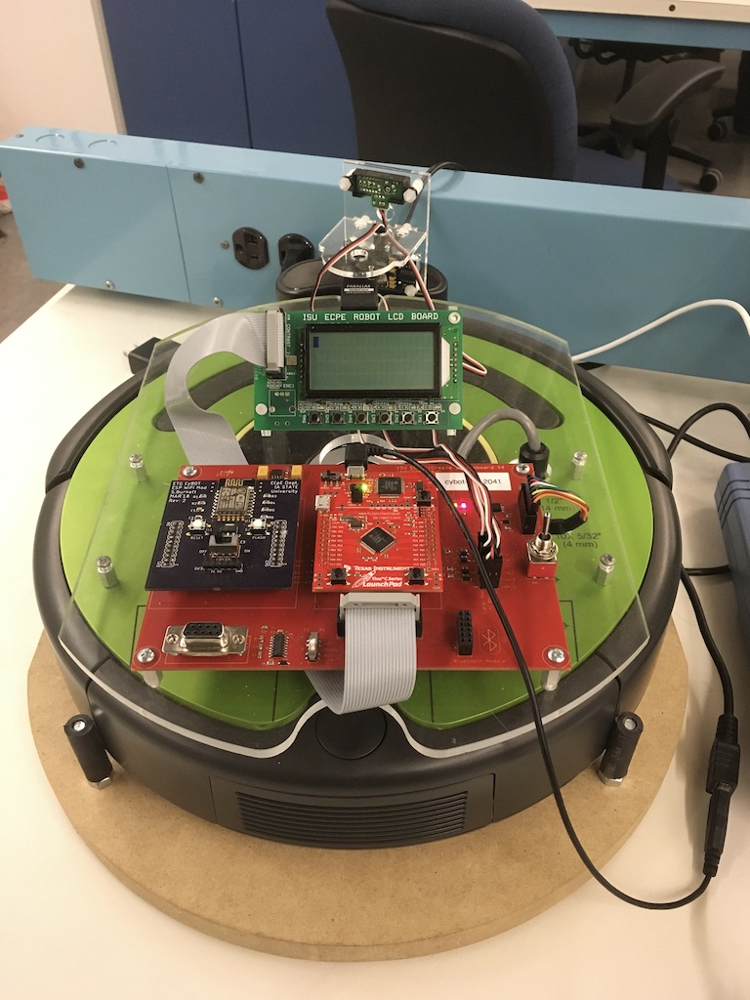
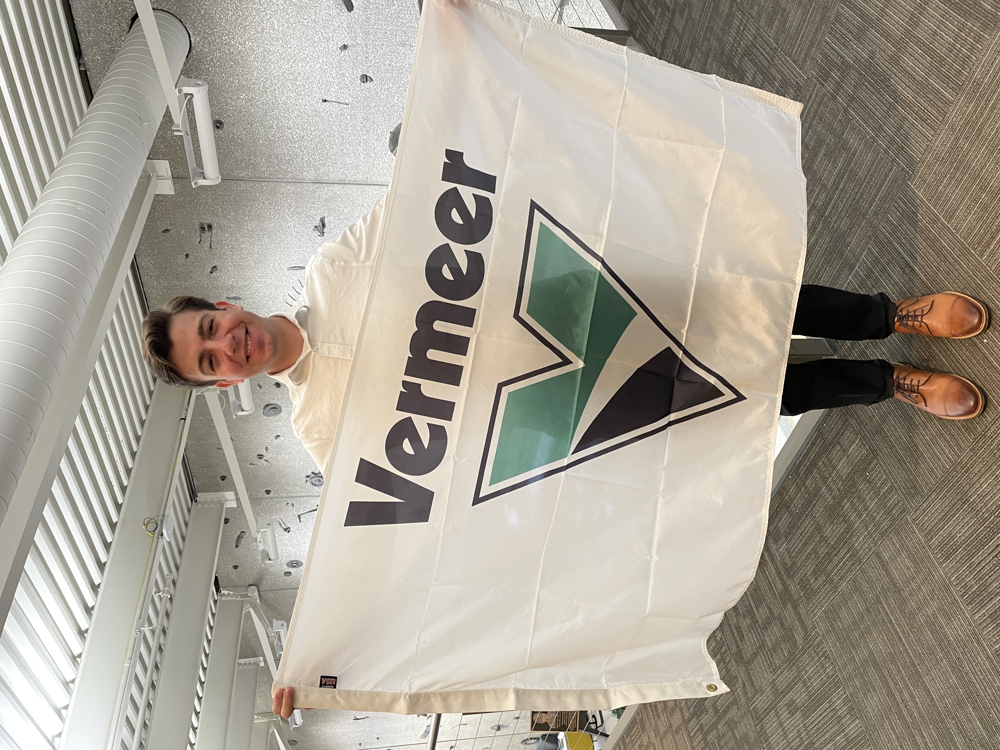

About
Computer Engineering Student | Iowa State University
Welcome to my portfolio!
I am a computer engineering student at Iowa State Univeristy with a passion for embedded systems, autonomy, and robotics. I enjoy developing, programming, and building programs and machines that interact with the real-world. I believe that these fields can provide a positive impact on peoples everyday lives. My drive to solve challenging problems, explore new technologies, and expand my knowledge and skills motivates me to grow as an engineer.
Career Objective
My goal is to become an embedded software engineer focused on developing impactful, efficient, and innovative solutions for real world applications. Through my education at Iowa State University, personal projects, and internship experience at Vermeer Corporation, I aim to continue strengthening my skills in computer engineering. I am eager to contribute to collaborative engineering teams, take on challenging technical problems, and develop technology that makes a meaningful impact.
Explore My Work
Projects - Explore my work in RISC-V processor design, autonomous robotics, and embedded systems.
Reflections - Learn about my academic growth, lessons learned, and how my experiences have shaped me as an engineer.
Resume - View my education, technical skills, projects, and professional background.
Project Portfolio
Scout | Senior Design
Scout FoodDen is a system designed to help households reduce food waste by tracking refrigerator inventory and estimating when food may spoil. It combines temperature and humidity sensors, barcode scanning, and a mobile app to help users monitor food freshness, manage groceries, discover recipes, and explore alternatives such as freezing, donating, or composting food.
My role focuses on technical planning and system design. I help translate user needs into technical requirements, organize project flowcharts, prioritize essential features for the minimum viable product (MVP), and establish a development roadmap.
Through this project, I am developing skills in system design, building requirements, technical planning, and cross functional collaboration. I am also gaining experience translating customer needs into practical engineering solutions and communicating technical concepts to nontechnical stakeholders.
Scout FoodDen aims to reduce household food waste, save families money, and minimize environmental impacts. By helping users better understand and manage their refrigerator inventory, the system encourages more intentional grocery shopping and more sustainable food consumption.

Early Core Product Outline for Scout Project
Tiny ImageNet Image Classification | Hardware Design for Machine Learning
The Tiny ImageNet Image Classification is a convolutional neural network that classifies images into 200 Tiny ImageNet categories. Throughout this project I explored model optimization and deployment by implementing inference in C++ and investigating 8-bit quantization for embedded hardware.
My role focused on training and evaluating the machine learning model, analyzed layer-by-layer computational requirements, and developed a C++ inference implementation to compare performance across computing platforms.
I gained experience with TensorFlow, Keras, CNN architectures, C++, model profiling, MAC operation analysis, and quantization techniques.
Resources: TensorFlow, Keras, Python, C++, Tiny ImageNet dataset, x86 computing platform, and ZedBoard FPGA platform.

ML Model Layer Structure
RISC-V Processor | Computer Organization and Assembly Level Programming
In my computer organization and assembly level programming class I designed and tested an RV32I RISC-V processor using VHDL, implementing single-cycle and pipelined architectures. I also evaluated processor performance and explored techniques for improving instruction execution efficiency.
My role focused on implementing and testing processor components, investigating pipeline hazards, and evaluating forwarding and stalling techniques. This was done by analyzing timing performance and instruction execution results.
By the end of this project I developed skills in VHDL, digital logic design, computer architecture, assembly-level programming, pipelining, hazard handling, and hardware verification.
Resources: VHDL, Intel Quartus, ModelSim/Questa, RARS, RISC-V assembly, and processor testbenches.
Autonomous Vacuum Robot | Embedded Systems
The autonomous vacuum robot is a machine capable of navigating its environment and responding to obstacles using an embedded microcontroller and multiple sensors. The robot detected walls, objects, and drop-offs to navigate safely while navigating.
My role was made up of programming the robot in C using a Tiva TM4C123 microcontroller by integrating infrared, ultrasonic, bumper, and cliff sensors to detect obstacles and implemting appropriate navigation responses.
At the end of this project I had gained hands-on experience with embedded C programming, microcontroller peripherals, sensor integration, real-time decision-making, debugging, and autonomous robot navigation.
Resources: Tiva TM4C123GH6PM microcontroller, C, infrared sensors, ultrasonic distance sensor, bumper and cliff sensors, and embedded development tools.

Vacuum Robot Programmed in Embedded Systems Course
Experience
During my summer internship at Vermeer Corporation, I worked as an Embedded Software Engineer Intern, developing and modifying machine software using MATLAB and Simulink. I gained hands-on experience with embedded communication protocols, including J1939 and UART, and developed an application to streamline software updates for production teams and engineers. Working in an Agile environment strengthened my collaboration, problem-solving, and adaptability while allowing me to apply my computer engineering knowledge to real-world industrial applications.

Reflections
Resume
Contact
Email: michaelpschmalz@yahoo.com
Phone: 515-612-0489